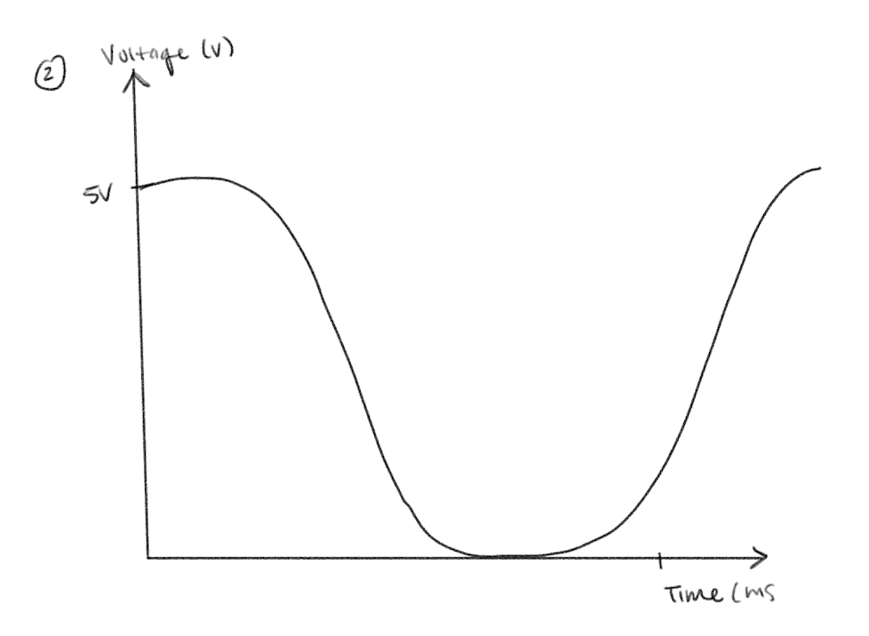

Jennifer's Assignment 3
Schematics
I began my assignment by first drawing out schematics before
starting on my circuit.
The resistance of LDR decreases as light intensity increases.
In bright light, the LDR resistance drops and in dim light, the LDR
resistance increases making the voltage closer to 5V.
I chose to use a 10k resistor for the photo resistor (LDR)
because it is a safe resistor that can ensure the analog values are readable,
and would balance appropiately for the sensitivity for detecting light.
I chose 220 resistors for each of my green LEDs because given that the voltage drop
of the color green is 1.6V, and the current flow is 0.02A, I calculated the resistance
for the 20mA current to be 170 ohms. Therefore, I used 220 ohm resistors so that it is safel
and so that the LED won't burn out.
Circuit
This was how I built my circuit:

As shown in the circuit, 220 ohm resistors were used for each of the
green LEDS, and a 10k resistor was used for the LDR. This
ensured that the output voltage would stay in within the Arduino's analog
input range of 0-5V. LED1, the left green LED, is
connected to pin 9, and the other green light is connected to pin 10.
Firmware Code
Below is the code I created to run my circuit:
const int LED1 = 9; // LED1 pin number
const int LED2 = 10; // LED2 pin number
void setup() {
Serial.begin(9600); // Start serial
pinMode(LED1, OUTPUT); // Set LED1 pin as OUTPUT
pinMode(LED2, OUTPUT); // Set LED2 pin as OUTPUT
}
void loop() {
// Read analog value from sensor
int sensorVal = analogRead(A0);
// Print sensor value
Serial.print("Original sensor value: ");
Serial.println(sensorVal);
// If the sensor value is low (finger on the sensor),
// LEDs will be ON (note: sensorvalue is around 850 when lights are off)
if (sensorVal < 850) {
// Map sensor value from the current range of value [850, 930]
// to the desired range [255, 0] (high to low brightness)
int mappedVal = map(sensorVal, 850, 930, 255, 0);
// Write mapped value to both LEDs
analogWrite(LED1, mappedVal); // Control LED1 brightness
analogWrite(LED2, mappedVal); // Control LED2 brightness
// Print mapped value
Serial.print("Mapped value (LED brightness): ");
Serial.println(mappedVal);
} else {
// If the sensor value is greater than 150 (finger is off the sensor)
// turn off the LEDs
analogWrite(LED1, 0); // Turn off LED1
analogWrite(LED2, 0); // Turn off LED2
}
// Adding small delay for readability
delay(100);
}
Based on my serial monitoring outputs, the sensor value is higher and
had a value of 924 when bright. Therefore, I mapped 930 closer to the value of 0 so that
the lights will be off when it is bright.
When it was dim around the sensor, the sensor value was lower and ranged
from 840-850. Therefore, I mapped 850 to the value of 255 so that the lights will
turn on to full brightness when it is dim around the sensor.
Circuit in Action
Here is a video of my circuit in action:

When it is bright, the lights are off. When it is dim, the lights turn on.
Additional Questions
(1) The variable resistor can be either R1 or R2.

(2)

(3) If we had 10-bit PWM and a 16-bit analog-to-digital converter instead,
the output range from the 10-bit PWM is now 0 to 1023. If we had a 16-bit ADC,
the sensor value would range from 0 to 65535. I would change my mapping to
int mappedVal = map(sensorVal, 0, 65535, 1023, 0). The sensor values would
range from 0 to 65535 because of the 16-bit ADC, and the PWM values are mapped to a 10-bit range,
so they will go from 0 to 1023.